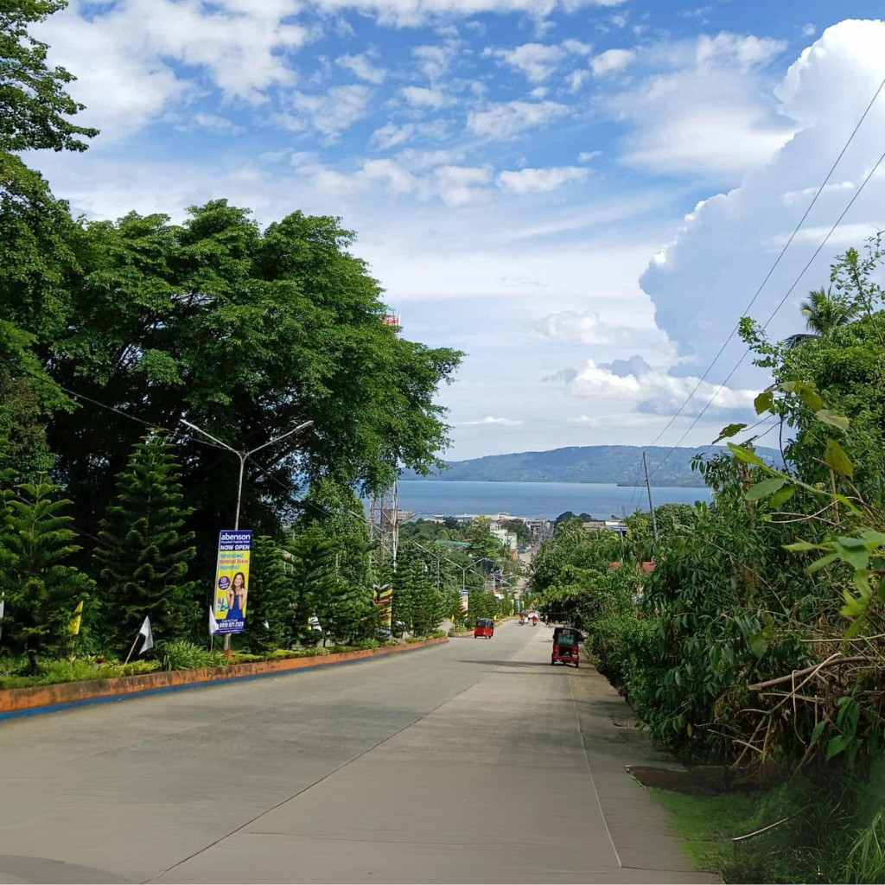

About Pagadian City
History
Pagadian began as a small settlement and developed during the Spanish and American colonial periods. It became a municipality and, later, was converted into a city. Over time it evolved into the commercial and administrative center for the surrounding province. Its growth is tied to fishing, trade, and agriculture, supported by its coastal location and road connections to neighboring municipalities.
Geography & Climate
The city sits along a sheltered bay with nearby coastal barangays and islands. Pagadian's topography is characterized by rolling hills and valleys that create multiple scenic viewpoints. The climate is tropical with a significant amount of rainfall, usually wetter from June to November and drier from December to May. Temperatures are generally warm year-round.
Economy
The local economy centers on fishing, agriculture, services, and small-to-medium enterprises. Seafood and agricultural produce are key products. Pagadian also serves as a transport hub for the province, linking smaller towns to larger markets.
Administration
Pagadian is governed by a city mayor and local council. It also hosts provincial offices for Zamboanga del Sur and provides many public services for the region.